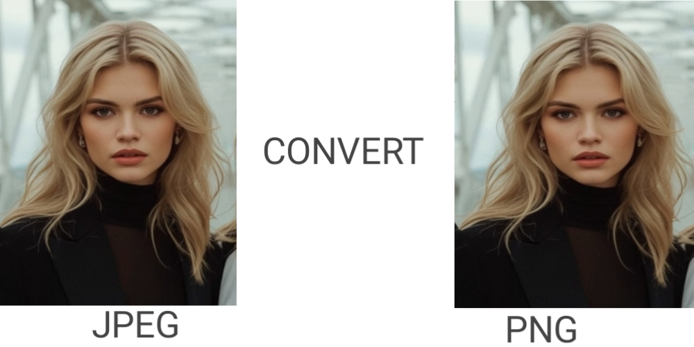

Convert Image Format Instantly
Upload any image and convert it to your desired format with precision quality control.
Select image & drag/drop here
Image Converted Successfully!
Complete Tutorial: How to Use Image Format Converter
Welcome to our comprehensive guide on using the Image Format Converter tool. This tutorial will walk you through every step of the conversion process, helping you get the best results for your images.
Step-by-Step Conversion Process
- Upload Your Image: Click the "Select Image" button or drag and drop your image file directly into the upload area. The tool supports JPG, JPEG, PNG, and WebP formats with files up to 20MB in size.
- Review Image Information: Once uploaded, the tool will display your image's details including dimensions (width × height in pixels), file size, and original format. This information helps you understand what you're working with before conversion.
- Select Output Format: Choose your desired output format from the dropdown menu. Each format has specific characteristics:
- JPG/JPEG: Ideal for photographs and realistic images. Uses lossy compression which reduces file size but may slightly reduce quality.
- PNG: Perfect for graphics, logos, and images requiring transparency. Uses lossless compression preserving all original quality.
- WebP: Modern format offering superior compression. Can be either lossy or lossless, providing excellent quality at smaller file sizes.
- Adjust Quality Settings: For JPG, JPEG, and WebP formats, use the quality slider to control compression levels. Higher quality means larger file sizes but better visual fidelity. For PNG format, quality is automatically set to 100% (lossless).
- Convert and Download: Click the "Convert Image Format Now" button. The tool will process your image and display the converted version along with detailed comparison information showing the original vs converted file sizes.
Advanced Tips for Optimal Results
For Photographs: Use JPG format with 85-95% quality. This provides excellent visual quality while significantly reducing file size compared to PNG. The difference is barely noticeable to the human eye but saves substantial storage space.
For Web Graphics: PNG is recommended when you need transparency (alpha channel) or when dealing with images containing text, logos, or simple graphics. PNG preserves sharp edges and transparency perfectly.
For Modern Websites: WebP format offers the best of both worlds - excellent compression rates while maintaining high quality. It's supported by all modern browsers and can reduce file sizes by 25-35% compared to JPG at similar quality levels.
Batch Processing: While our tool processes one image at a time, you can quickly convert multiple images by resetting after each conversion. The tool retains your quality and format settings for subsequent conversions.
Understanding Image Formats Deep Dive
JPG/JPEG Format
- Lossy compression algorithm
- Best for photographs
- Smallest file sizes
- No transparency support
- Universal compatibility
- Quality adjustable 40-100%
PNG Format
- Lossless compression
- Perfect for graphics/text
- Transparency support
- Larger file sizes
- Excellent quality preservation
- Quality always 100%
WebP Format
- Modern compression technology
- Lossy or lossless options
- Superior compression rates
- Transparency support
- Growing browser support
- Future web standard
Technical Details & Performance
Our converter uses advanced HTML5 Canvas technology to process images entirely in your browser. This approach offers several advantages:
- Privacy Protection: Your images never leave your computer. All processing happens locally in your browser.
- Lightning Speed: By leveraging your device's GPU and optimized JavaScript algorithms, conversions happen in 1-2 seconds even for large images.
- No Server Limitations: Since processing is client-side, there are no upload/download speed limitations or server queues.
- Offline Capability: Once loaded, the tool works completely offline without internet connection.
- Cross-Platform: Works on all modern browsers including Chrome, Firefox, Safari, Edge, and mobile browsers.
Quality Optimization Guidelines
Choosing the right quality setting depends on your specific needs:
90-100% Quality: Use for archival purposes, professional photography, or when file size is not a concern. Minimal compression artifacts.
80-89% Quality: Ideal balance for web use. Good quality with reasonable file sizes. Recommended for most website images.
70-79% Quality: Noticeable but acceptable quality reduction. Use for thumbnail images or when storage space is limited.
60-69% Quality: Significant quality reduction. Only use for very small preview images or when extreme file size reduction is needed.
40-59% Quality: Severe quality loss. Generally not recommended except for specific low-bandwidth applications.
Common Use Cases
Website Optimization: Convert large PNG images to optimized JPG or WebP format to improve page loading times. A 1MB reduction in image size can improve page load time by 0.5-1 second on average connections.
Social Media Preparation: Different platforms have different format preferences. Convert to appropriate formats before uploading to ensure best display quality.
Document Preparation: Convert images to appropriate formats for inclusion in documents, presentations, or PDF files to manage overall file size.
Email Optimization: Reduce image file sizes for email attachments while maintaining acceptable quality for viewing.
Archival Conversion: Convert older or proprietary image formats to standard formats for long-term preservation and accessibility.
Troubleshooting Common Issues
Large File Uploads: If you're having trouble uploading large images, ensure you have a stable internet connection. The tool can handle up to 20MB files, but very slow connections may time out.
Quality Concerns: If converted images appear blurry or pixelated, try increasing the quality setting or consider using PNG format for lossless conversion.
Format Compatibility: Some older software may not support WebP format. For maximum compatibility, use JPG or PNG formats.
Transparency Issues: When converting from PNG (with transparency) to JPG, transparent areas will become white. To preserve transparency, convert to PNG or WebP format.
Color Profile Changes: Some color profiles may not be preserved during conversion. For professional color-critical work, consider specialized software.
Future Enhancements & Updates
We're continuously improving our Image Format Converter. Planned enhancements include:
- Support for additional formats (AVIF, HEIC)
- Batch conversion capabilities
- Advanced compression algorithms
- Preset configurations for specific platforms
- EXIF data preservation options
- Color space conversion options
By following this comprehensive guide, you'll be able to make informed decisions about image format conversion and optimize your images for any purpose. Remember that the best format depends on your specific needs - there's no one-size-fits-all solution.
Frequently Asked Questions
Our converter supports four major image formats: JPG, JPEG, PNG, and WebP. You can convert from any of these formats to any other. The tool automatically detects the input format and allows you to choose your desired output format.
Yes, the maximum file size is 20MB per image. This limit ensures fast processing and prevents browser memory issues. For larger files, we recommend resizing or compressing them first using our other tools before format conversion.
Absolutely! All image processing happens locally in your browser using HTML5 Canvas technology. Your images never leave your computer and are not uploaded to any server. This ensures complete privacy and security for your sensitive images.
PNG uses lossless compression, which means it preserves all original image data without quality loss. Therefore, quality adjustment doesn't apply to PNG format. The quality is always 100% (lossless) for PNG conversions.
JPG/JPEG: Best for photographs, realistic images, and web content where small file size is important.
PNG: Ideal for graphics, logos, screenshots, and images requiring transparency.
WebP: Excellent modern format for websites, offering superior compression while maintaining quality.
Choose based on your specific requirements for quality, file size, and features like transparency.
Currently, our converter focuses on pixel data conversion and may not preserve all EXIF metadata (camera settings, location data, etc.). For metadata preservation, specialized software may be required. We're working on adding metadata preservation in future updates.
Yes! Our converter is fully responsive and works perfectly on smartphones and tablets. The interface adapts to smaller screens, and all functionality remains available. You can upload images from your mobile device's gallery and convert them on the go.
Conversion speed depends on your device's processing power and image size. On average, a 5MB image converts in under 1 second, while a 20MB image takes 1-2 seconds. The tool uses optimized algorithms and GPU acceleration for maximum speed.
No, our Image Format Converter is completely free with no hidden costs, watermarks, or limitations. You can convert as many images as you need without any restrictions. We believe in providing valuable tools accessible to everyone.
If you encounter an error, try these steps: 1) Refresh the page, 2) Ensure your image file is valid and not corrupted, 3) Check that the file size is under 20MB, 4) Try a different browser. If problems persist, the error message will provide specific guidance.